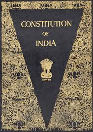
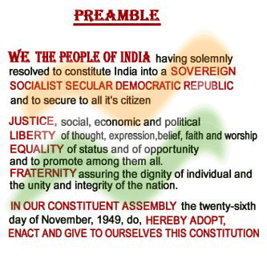
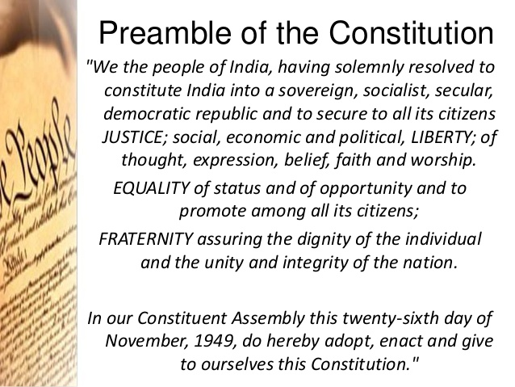
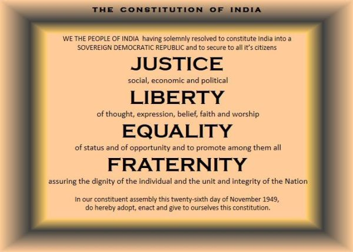

- Home
- More about Constitution of India
Preamble

The original text of the Preamble, (before the 42nd Amendment) of the Constitution Preamble to the Constitution of India is a brief introductory statement that sets out the guiding purpose and pinciples of the document, and it indicates the source from which the
document derives its authority, meaning, the people.[1]
The hopes and aspirations of the people as well as the ideals before our nation are described in the preamble in clear words. It may be considered as the soul of Constitution. The preamble can be referred to as the preface which highlights the entire Constitution. It was adopted on
26 November 1949 by the Constituent
Assembly and came into effect on 26th January, 1950.
Historic background Edit The preamble is based on the Objectives which was drafted and moved in the Constituent Assembly by Jawaharlal Nehru on 13 December 1946.[2] The preamble-page, along with other pages of the original Constitution of India, was designed and decorated solely by renowned painter Beohar
Rammanohar Sinha of Jabalpur
who was at Shantiniketan with acharya Nandalal Bose at that time. Nandalal Bose endorsed Beohar Rammanohar Sinha's artwork without any alteration whatsoever. As such, the page bears Beohar Rammanohar Sinha's short signature Ram in Devanagari lower-right corner. B. R. Ambedkar said about the preamble:
It was, indeed, a way of life, which recognizes liberty, equality and fraternity as the principles of life and which cannot be divorced from each other: Liberty cannot be divorced from equality; equality cannot be divorced from liberty. Nor can liberty and equality be divorced from fraternity. Without equality, liberty would produce
the supremacy of the few over the many. Equality without liberty would kill individual initiative. Without fraternity, liberty and equality could not become a natural course of things.[3]
That the preamble is not an integral part of the Indian constitution was declared by the Supreme Court of India in BeruBari case[4] therefore it is not enforceable in a court of law. However, Supreme Court of India has, in the Kesavananda case, overruled earlier decisions and recognised that the preamble may be used to interpret
ambiguous areas of the constitution where differing interpretations present themselves. In the 1995 case of Union Government Vs LIC of India also, the Supreme Court has once again held that Preamble is the integral part of the Constitution.
As originally enacted the preamble described the state as a "sovereign democratic republic". In 1976 the Forty-second Amendment changed this to read "sovereign socialist secular democratic republic".[5]
Text of the Preamble Edit These are the opening words of the preamble of the Indian Constitution.
“ WE, THE PEOPLE OF INDIA, having solemnly resolved to constitute India into a SOVEREIGN, SOCIALIST, SECULAR ,DEMOCRATIC REPUBLIC and to secure to all its citizens:
JUSTICE, social, economic and political;
LIBERTY of thought , expression, belief, faith and worship;
EQUALITY of status and of opportunity; and to promote among them all[6]
FRATERNITY assuring the dignity of the individual and the unity and integrity of the Nation;
IN OUR CONSTITUENT ASSEMBLY this twenty-sixth day of November, 1949, do HEREBY ADOPT, ENACT AND GIVE TO OURSELVES THIS CONSTITUTION.
” Enacting formula Edit The enacting words, "We, the people of India ...in our constituent assembly ...do here by adopt, enact and give to ourselves this constitution", signify the democratic principle that power is ultimately rested in the hands of the people. It also emphasizes that the constitution
is made by and for the Indian people and not given to them by any outside
power (such as the British Parliament). The phrase "we the people" emphasizes
the concept of popular sovereignty as laid down by J. J. Rousseau:
All the power emanates from the people and the political system will be accountable and responsible to the people.
Sovereign Edit It means free from the control of any foreign power and internally has a free government which is directly elected by the people and makes laws that govern the people. She allies in peace and war.
The Popular sovereignty is also one of the basic structures of constitution
of India. Hence, Citizens of India also
enjoy sovereign power to elect their representatives through elections held for the parliament, state legislature and local bodies as well. People have supreme right to make decisions on internal as well as external matters. No external power
can dictate the government of India. India’s membership of the commonwealth or
of the United Nations does not impose any external limit on her sovereignty. The Commonwealth is a free association of sovereign Nations. It is no longer British Commonwealth. India does not accept the British Queen as the head of state.
The sovereignty empowers India to either acquire a foreign territory or cede a part of its territory in favour of a foreign [7]
Socialist Edit Before the term was added by the 42nd Amendment in 1976, the Constitution had a socialist content in the form of certain Directive Principles of State Policy. The term socialist here means democratic socialism i.e.
achievement of socialistic goals through democratic, evolutionary and non-violent means. A mixed economy in which both Public sector and Private sector run together as two wheels of economic development.
Secular Edit Secular means the relationship between the government and the people which is determined according to constitution and law. By the 42nd Amendment in 1976, the term "Secular" was also incorporated in the Preamble.
Secularism is the basic structure of the Indian constitution. The Government respects all religions. It does not uplift or degrade any particular religion. There is no such thing as a state religion for India. In S.R. Bommai vs UOI (1994) The SC of India held "A state which does not recognise any religion as the state religion,
it treats all religions equally". Positively, Indian secularism guarantees equal freedom to all religion. it stands for the right to freedom of religion for all citizens. Explaining the meaning of secularism as adopted by India, Alexander Owics has written, "Secularism is a part of the basic of the Indian Constitution and it means equal freedom and respect for all religions."[7]
Democratic Edit The first part of the preamble “We, the people of India” and, its last part “give to ourselves this Constitution” clearly indicate the democratic spirit involved even in the Constitution. India is a democracy. The people of India elect their governments at all levels (Union, State and local) by a system of universal adult franchise; popularly known as "one man one vote".
Every citizen of India,Amendment years of age and above and not otherwise debarred by law, is entitled to vote. Every citizen enjoys this right without any discrimination on the basis of caste, creed, colour, [gender], Religious intolerance or education. The word 'democratic' not only refer to political but also to social & economic democracy.[7]
Republic Edit In a republic form of government, the head of the state is an elected person and not a heredity monarch . This word denotes a government where no one holds a public power as proprietary right . As opposed to a monarchy, in which the head of state is appointed on hereditary basis for a lifetime or until he abdicates from the throne, a democratic
republic is an entity in which the head of state is elected, directly or indirectly, for a fixed tenure. The President of India is elected by an electoral college for a term of five years. The post of the President of India is not hereditary. Every citizen of India is eligible to become the President of the country. The leader of the state is elected by the people.[8]
Liberty Edit The idea of Liberty refers to the freedom on the activities of Indian nationals. This establishes that there are no unreasonable restrictions on Indian citizens in term of what they think, their manner of expressions and the way they wish to follow up their thoughts in action. This is found to be an important tool in ensuring democratic framework. However, liberty does not mean freedom to do anything,
and it must be exercised within the constitutional limits.this is second provision.
Equality Edit This envisages that no section of the society enjoys special privileges and individuals are provided with adequate opportunities without any discrimination.All are equal in front of law. Again, there are three dimensions of Equality - Political, Economic & Civic.
Fraternity Edit This refers to a feeling of brotherhood & a sense of belonging with the country among its people. It embraces psychological as well as territorial dimensions of National Integration. It leaves no room for regionalism, communalism, casteism etc. which hinders the Unity of the State.The inclusion of the word "Fraternity" is proposed by Dr. B.R Ambedkar.
Amendablity Edit In Berubari Case (1960), Supreme Court had held that Preamble can not be a part of the constitution but later in Kesavanada Bharati VS Kerala state Case (1973), the Supreme Court gave a comprehensive verdict. It said that Preamble is Part of Constitution and is subject to the amending power of the parliament as any other provisions of the Constitution, provided the basic structure of the constitution is not destroyed.
It has been clarified by the Supreme Court of India that being a part of Constitution, the Preamble can be subjected to Constitutional Amendments exercised under article 368, however, the basic structure cannot be altered.
Forty-second Amendment Edit The preamble has been amended only once so far. On 18 December 1976, during the Emergency in India, the Indira Gandhi government pushed through several changes in the Forty-second Amendment of the constitution. A committee under the chairmanship of Sardar Swaran Singh recommended that this amendment be enacted after being constituted to study the question of amending the constitution in the light of past experience.
Through this amendment the words "socialist" and "secular" were added between the words "Sovereign" and "democratic" and the words "unity of the Nation" were changed to "unity and integrity of the Nation".[5]
References Edit ^ Baruah, Aparijita (2007). Preamble of the Constitution of India: An Insight and Comparison with Other Constitutions. . ^ Can Parliament give its territory to a foreign country?, available at Learning the Law. ^ a b "The Constitution (Forty-Second Amendment) Act, 1976". Government of India. Retrieved 1 December 2010. ^ a b c M Laxmikanth. "4". Indian Polity (4th ed.). McGraw Hill Education.
p. 4.2. ISBN 978-1-25-906412-8. ^ M Laxmikanth. "4". Indian Polity (4th ed.). McGraw Hill Education. p. 4.3. ISBN 978-1-25-906412-8. Last edited 2 days ago by Fixer88 RELATED ARTICLES Constitution of Bangladesh Fundamental rights in India charter of rights contained in the Constitution of India Forty-second Amendment of the Constitution of India.
The Preamble to our Constitution as adopted by the constituent assembly, :
WE, THE PEOPLE OF INDIA, having solemnly
resolved to constitute India into a
SOVEREIGN SOCIALIST SECULAR DEMOCRATIC REPUBLIC and
to secure to all its citizens:
JUSTICE, social, economic and political;
LIBERTY of thought, expression, belief, faith and worship
EQUALITY of status and of opportunity;
and to promote among them all
FRATERNITY assuring the dignity of the individual
and the unity and integrity of the Nation;
IN OUR CONSTITUENT ASSEMBLY this twenty sixth day of November, 1949, do HEREBY ADOPT,
ENACT AND GIVE TO OURSELVES THIS CONSTITUTION.
The Preamble of Indian Constitution is considered to be a part of the Constitution of India after the orders of the Supreme Court.
The main purposes of having a Preamble of Indian Constitution are:
The Preamble of Indian Constitution refers to the source that is responsible for the authority of the Constitution
The Preambles of Indian Constitution also refers about the objectives of the Indian Constitution.
The Preamble is considered to be one of the most significant parts of the Constitution of India.
Focusing on the main objective of the Indian Constitution, the Preamble includes the four objectives-Equality, Justice, Fraternity and Liberty.
Significance of these four objectives is discussed below:
The Preamble is one of the most significant parts of the Constitution of India.
Focusing on the core objective of the Indian Constitution, the Preamble includes the following:
Equality - which connotes equal opportunity and status for one and all
Justice - which means fair judgment in the fields of politics, society and economy
Fraternity - which works towards keeping the integrity and strength of the country intact along with special stress on individual dignity
Liberty - which assures every citizen of India the freedom of speech and expression, religious independence and choice of going by one's own belief


